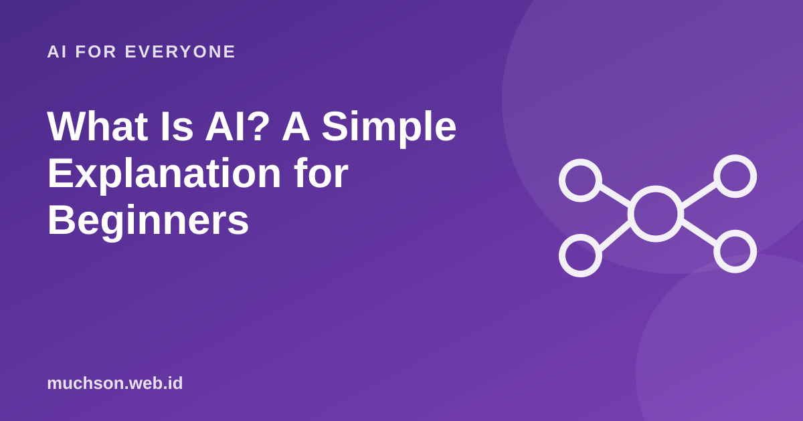

Home › Articles › AI for Everyone
AI for EveryoneWhat Is AI? A Simple Explanation for Beginners
The word "AI" is everywhere, from phone ads to news about jobs. But what does it actually mean? Here is a clear picture without the jargon, so you can tell what is real from what is exaggerated.

AI: computers doing tasks that usually need human intelligence
Artificial intelligence (AI) is a computer system that can do things like recognise images, understand language, give recommendations or write text. The important point is that today's AI is a tool that learns patterns from data, not a being that thinks or is conscious.
Text description of the diagram
- AI (artificial intelligence): The widest umbrella: systems that imitate intelligent abilities
- Machine learning: Learns patterns from example data instead of being given rules one by one
- Deep learning: Machine learning with artificial neural networks that have many layers
- Generative AI: Creates new content: text, images, sound, code
Examples of AI you already use
- Video and music recommendations that seem to "know" your taste.
- Unlocking your phone with your face or fingerprint.
- Automatic translation and voice typing.
- Spam filters in email.
- Maps that estimate traffic.
- Chatbots and assistants that answer questions, summarise or write drafts.
How does AI "learn"?
Text description of the diagram
- Collect examples: thousands of photos, texts or data
- Train a model: find patterns in the examples
- Test: on data it has not seen
- Use: to predict new data
What it can and cannot do
FAQ
Will AI replace humans?
AI takes over some tasks, not whole jobs. Work changes, and being able to use AI well becomes an advantage.
Is AI the same as a robot?
No. AI is software. A robot is a physical machine that can use AI as its brain.
Is AI always right?
No. AI can be wrong, make things up or be biased. For anything important, check with a trusted source.